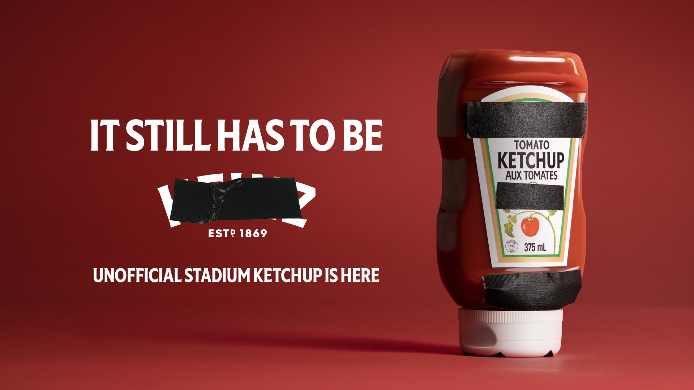

案例发生了什么

世界杯 “洁净场馆”品牌限制 规则令非官方品牌在场馆内被遮挡。Heinz 没有回避这个限制，而是将黑胶带覆盖的标签直接做成 “Unofficial Stadium Ketchup” 限量产品和社交主视觉。
案例启示
案例启示
关键动作
- 将真实发生的“贴黑条”保留为视觉语言，而不是重新设计一个赛事海报。
- 把被限制的标识直接印在产品包装上，让新闻点可以进入零售和收藏。
- 用“即使遮住也认得出”的产品资产，证明品牌辨识度本身就是传播内容。
传播与商业机制
传播路径
以““洁净场馆”品牌限制 限制 / 限量产品”为资源起点，进入创意内容、社交讨论、门店/商品与可即时参与的生活场景，让赛事权益转化为用户可接触、可讨论或可参与的内容。
商业承接
不把曝光直接等同销售，重点观察创意记忆、品牌自然提及、参与行为与商品/服务转化，并区分品牌自报、平台数据与可独立核验结果。
可复用的方法当限制足够具体，最有效的反击往往不是绕开它，而是把它做成产品的一部分。
适用条件、风险与证据
- 切口必须与产品真实使用场景有关，否则容易变成蹭热度。
- 节奏上要靠近球迷讨论时刻，但不需要强行追每一场赛果。
- 对文化、肖像和赛事知识产权做独立审核。
核验记录可将已核动作作为内部判断基础；涉及投放规模、销售结果或合作细则时，仍应以品牌、平台或权利方的一手发布为准。 当前记录：已核（品牌创意与报道）；素材状态：已归档核心 KV。
资料与来源
资料状态与补证方向
当前资料基础
不依赖最高级别赛事标识，争夺足球文化和生活场景。 页面已记录参与路径、动作机制、证据状态与素材状态。
优先补证
已归档素材状态为“已归档核心 KV”，下一步应继续补发布日期、投放场景和可归因效果。
结果口径
尚未归档可独立验证的效果数据时，不以曝光推断销售，也不把平台整体数据归因到单一品牌。